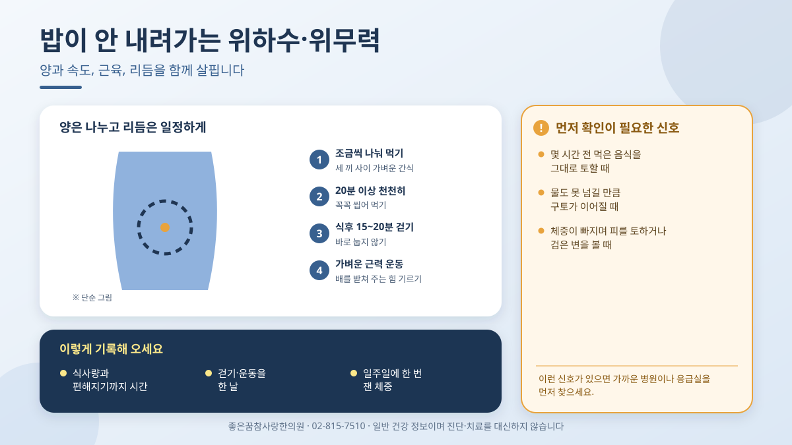

이종호 한의사 감수좋은꿈참사랑한의원 대표원장 (한의사 면허번호 19769)발행 2026-11-26 · 수정 2026-11-26
이 글의 차례
저녁을 반 공기쯤 먹었을 뿐인데 숟가락을 더 들 수가 없습니다. 배가 금세 차오르고, 두세 시간이 지나도 밥이 명치 아래에 그대로 얹혀 있는 것 같습니다. 잠자리에 누우면 출렁이는 느낌까지 들어, 결국 일어나 앉아 소화되기를 기다립니다.
진료실에서 "예전부터 위가 처졌다는 말을 들었어요", "위에 힘이 없대요"라고 말씀하시는 분을 자주 뵙습니다. 마른 체형이거나 오래 식사량이 적었던 분, 근육이 적고 쉽게 지치는 분이 많습니다. 먹고 싶은 마음은 있는데 몸이 받아 주지 않으니 속상하실 수밖에 없습니다.
위하수와 위무력은 일상에서 흔히 쓰이는 말이지만, 그 뜻이 조금씩 섞여 쓰입니다. 위하수는 위의 자리가 아래로 처져 있다는 뜻이고, 위무력은 위가 음식을 섞고 내려보내는 힘이 약하다는 뜻에 가깝습니다. 둘이 함께 말해지는 경우가 많지만, 실제 불편은 주로 내려보내는 흐름이 느린 데서 옵니다.
저는 이런 분께 위의 모양보다 "하루 동안 위가 얼마나 일하고 얼마나 쉬는지"를 먼저 함께 봅니다. 먹는 양과 속도, 식사 간격, 근육량, 자세, 잠과 긴장이 모두 위의 흐름에 영향을 주기 때문입니다.
위하수와 위무력은 어떻게 다른 말인가요?
위하수는 엑스레이 같은 영상에서 위가 평균보다 아래쪽에 자리 잡고 있는 모습을 두고 하는 말입니다. 키가 크고 마른 체형에서 흔히 보이며, 위가 아래에 있다는 것만으로 꼭 불편이 생기는 것은 아닙니다. 위가 처져 있어도 아무 불편 없이 지내는 분도 많습니다.
위무력은 위가 음식을 받아들이고, 섞고, 아래로 내려보내는 힘이 떨어진 상태를 두루 가리키는 말입니다. 의학에서는 위가 비워지는 속도가 늦어진 상태를 위 배출 지연, 그리고 뚜렷한 원인 없이 더부룩함과 조기 포만감이 이어지는 상태를 기능성 소화불량이라고 부르는데, 일상에서 말하는 위무력은 이 둘과 겹치는 부분이 많습니다.
그래서 진료실에서는 '처졌다', '힘이 없다'는 말 자체보다, 실제로 어떤 불편이 언제 생기는지를 먼저 여쭙니다. 조금만 먹어도 배부른지, 먹고 나서 오래 무거운지, 출렁이는 소리가 나는지, 메슥거림이나 트림이 함께 오는지가 더 중요한 단서입니다.
왜 밥이 위에서 잘 내려가지 않을까요?
위는 음식을 받으면 먼저 위쪽이 느슨하게 늘어나 공간을 만들고, 아래쪽이 규칙적으로 움직이며 음식을 잘게 섞어 조금씩 장으로 내려보냅니다. 이 흐름 가운데 어느 한 곳이 늦어지면 밥이 오래 머무는 느낌이 생깁니다.
먹는 습관이 가장 먼저 영향을 줍니다. 빨리 먹으면 위가 늘어날 준비를 하기 전에 음식이 몰려 금세 배부르고, 늦은 시각의 과식은 잠든 동안 위가 쉬지 못하게 합니다. 기름진 음식과 섬유질이 많은 거친 음식은 위에 머무는 시간을 더 길게 만듭니다.
근육과 체력도 관련이 있습니다. 몸 전체의 근육이 적고 기운이 없는 분은 배를 받쳐 주는 힘도 약해, 식사 뒤 배가 아래로 처지고 출렁이는 느낌을 자주 말씀하십니다. 오래 식사량이 적었던 분은 위가 적은 양에 익숙해져 조금만 먹어도 버거워지기도 합니다.
긴장과 잠도 위의 흐름을 흔듭니다. 마음이 쫓기면 위의 움직임이 멈칫하고, 잠이 부족하면 위의 리듬 자체가 흐트러집니다. 바쁜 시기에 유독 밥이 안 내려간다고 느끼신다면 이 갈래를 함께 떠올려 보시면 됩니다.
몸 전체의 변화가 원인인 경우도 있습니다. 오래된 당뇨, 갑상선 기능 저하, 일부 약물, 위 수술 이력은 위가 비워지는 속도를 늦출 수 있습니다. 그래서 진료실에서는 혈당과 갑상선 검사, 드시는 약을 꼭 함께 확인합니다.
비슷해 보이지만 다른 불편과는 어떻게 다른가요?
더부룩함은 배가 차 있는 느낌 전반을 말하고, 위무력에서 오는 불편은 그 가운데 '내려가지 않는다', '조금만 먹어도 배부르다'는 느낌이 두드러집니다. 식사량 자체가 줄어든다는 점이 특징입니다.
식욕부진은 먹고 싶은 마음 자체가 줄어드는 것이고, 위무력은 먹고 싶은 마음은 있는데 몸이 받아 주지 않는 것에 가깝습니다. 둘이 오래 겹치면 결국 입맛까지 떨어지기도 해서 함께 살핍니다.
속쓰림이나 신물은 위산과 역류 쪽 불편이라서 위무력과는 결이 다릅니다. 다만 음식이 오래 머물면 위 안의 압력이 높아져 역류가 함께 생기는 분도 계십니다.
한의학에서는 이 불편을 어떻게 보나요?
한의학에서는 음식을 받아 소화하고 기운으로 바꾸는 일을 비위가 맡는다고 봅니다. 비위의 기운이 약해 음식을 아래로 내려보내는 힘이 부족한 상태를 흔히 비위허약, 기운이 아래로 처진 상태를 중기하함이라고 부르며 위하수와 함께 이야기해 왔습니다.
이런 분은 대개 손발과 배가 차고, 조금만 움직여도 쉽게 지치며, 식사 뒤 졸음이 몰려오고, 목소리에 힘이 적은 모습을 함께 보입니다. 맥도 가늘고 힘이 약하게 느껴지는 경우가 많습니다. 저는 이런 몸 전체의 모습을 함께 읽으며 위의 흐름을 살핍니다.
이런 살핌은 내시경이나 혈액 검사를 대신하는 것이 아닙니다. 검사로 큰 이상을 먼저 확인하고, 그 위에서 몸 전체의 기운과 리듬을 함께 읽는 방법이라고 생각해 주시면 됩니다.
위하수와 위무력을 두고 자주 헷갈리는 것
첫째, 위가 처졌으니 평생 이렇게 살아야 한다는 생각입니다. 위의 자리는 체형과 관련이 있지만, 불편의 크기는 먹는 습관, 근육, 잠, 긴장에 따라 꽤 달라질 수 있습니다. 자리보다 흐름을 살피는 것이 더 현실적입니다.
둘째, 위가 약하니 죽만 먹어야 한다는 생각입니다. 아주 불편한 기간에는 부드러운 음식이 도움이 되지만, 오래 죽만 드시면 단백질과 기운이 모자라 오히려 위를 받쳐 주는 힘이 줄어들 수 있습니다. 부드럽되 골고루 드시는 쪽을 권합니다.
셋째, 많이 먹어서 위를 늘려야 한다는 생각입니다. 억지로 많이 먹으면 위가 더 지치고 불편이 커지기 쉽습니다. 양은 조금씩, 횟수는 나눠서 늘리는 것이 위에 덜 부담스럽습니다.
계절과 생활에 따라 달라지는 위의 흐름
여름에는 찬 음료와 에어컨 바람에 배가 차가워지면서 밥이 더 안 내려간다고 말씀하시는 분이 많습니다. 겨울에는 움직임이 줄고 기름진 음식이 늘어 위가 무거워지기 쉽습니다.
시험이나 마감처럼 바쁜 시기, 이사나 이직처럼 생활이 크게 바뀌는 시기에도 위의 흐름이 흔들립니다. 이런 시기에는 완벽한 식단보다 식사 시각을 일정하게 지키는 것을 먼저 챙기시길 권합니다.
혼자 사시거나 바쁜 일정으로 끼니를 대충 때우는 분도 위의 흐름이 흔들리기 쉽습니다. 빵이나 면으로 빠르게 한 끼를 넘기는 날이 이어지면, 위는 적은 양에 익숙해지고 단백질과 기운은 모자라게 됩니다. 일주일에 몇 끼라도 앉아서 천천히 드시는 끼니를 정해 두시길 권합니다.
식사 자세도 살펴보세요. 소파에 기대 비스듬히 앉거나 고개를 숙여 휴대폰을 보며 먹으면 배가 접혀 위가 늘어날 공간이 줄어듭니다. 등을 펴고 앉아 음식에 집중하는 것만으로도 덜 버겁게 느끼시는 분이 있습니다.
먼저 이렇게 여쭙니다
처음 오시면 대략 이런 순서로 여쭙니다. 미리 떠올려 오시면 이야기가 수월해집니다.
- 한 끼에 드시는 양과 식사 시간은 어느 정도인가요?
- 식사 뒤 몇 시간쯤 지나야 속이 편해지나요?
- 배에서 출렁이는 소리나 느낌이 있나요?
- 메슥거림, 트림, 신물, 변비가 함께 오나요?
- 최근 체중이 줄었나요? 기운은 어떠신가요?
- 당뇨, 갑상선, 위 수술 이력이나 드시는 약이 있나요?
모든 질문에 정확히 답하지 못하셔도 괜찮습니다. 평소 한 끼에 드시는 양과 식사 뒤 편해지기까지의 시간, 이 두 가지만 알려 주셔도 이야기를 시작하기에 충분합니다. 예전에 받으신 검사 결과지가 있다면 오래된 것이라도 함께 가져와 주세요.
일상에서 먼저 해 볼 수 있는 것
위의 흐름을 돕는 첫걸음은 위가 감당할 수 있는 양을 나눠 주고, 일하고 쉬는 리듬을 일정하게 만드는 것입니다. 하나씩 골라 일주일씩 해 보세요.
- 하루 세 끼를 조금씩 줄이고, 그 사이 가벼운 간식 한두 번 더하기
- 한 끼를 20분 이상, 꼭꼭 씹어 천천히 먹기
- 식사 중 국물과 물은 조금만, 물은 식사 사이에 나눠 마시기
- 식사 뒤 바로 눕지 말고 15~20분 천천히 걷기
- 기름진 음식과 아주 거친 섬유질은 불편한 기간에 양 줄이기
- 잠들기 세 시간 전에는 식사 마치기
음식은 부드럽게 익힌 채소, 생선, 두부, 달걀처럼 위에 부담이 적은 단백질을 골고루 드시는 쪽을 권합니다. 차가운 음료보다 미지근한 물이나 보리차, 따뜻하게 데운 음식이 배를 편하게 해 주는 경우가 많습니다.
배를 받쳐 주는 힘을 기르는 것도 중요합니다. 하루 20~30분 걷기, 의자에서 일어났다 앉기, 누워서 무릎을 세우고 엉덩이 들기처럼 가벼운 근력 운동부터 시작해 보세요. 식사 직후보다는 식사 한두 시간 뒤가 편합니다.
식사 뒤 출렁임이 심할 때는 오른쪽으로 비스듬히 누워 쉬면 위의 내용물이 장 쪽으로 내려가기 쉽다고 말씀하시는 분이 있습니다. 다만 바로 잠드는 것은 피하시고, 잠시 쉬었다가 다시 일어나 움직여 주세요.
한의원에서 함께 살필 수 있는 경우
- 내과 검사에서 큰 이상은 없다는데 조금만 먹어도 배부르고 밥이 내려가지 않는 경우
- 식사량이 줄면서 체중과 기운이 함께 떨어진 경우
- 손발과 배가 차고 식사 뒤 졸음이 심한 경우
- 바쁘거나 긴장한 시기에 위의 불편이 유독 커지는 경우
- 오래 식사량이 적어 위가 적은 양에 익숙해진 경우
좋은꿈참사랑한의원에서는 먼저 아래 '먼저 확인이 필요한' 신호가 없는지 살핀 뒤, 맥과 배, 혀를 함께 봅니다. 배가 힘없이 처져 있는지, 명치 아래가 출렁이는지, 배가 차가운지를 직접 만져 보며 확인하고, 필요하다고 판단되면 인바디로 근육량을 함께 봅니다.
진찰한 내용을 바탕으로 침, 온열 관리, 한약 상담 가운데 지금 상태에 맞는 것을 정하고, 식사의 양과 횟수, 움직임 가운데 바꿔 볼 것 하나를 함께 고릅니다. 한약을 상의할 때는 드시는 약을 모두 확인하고 신중하게 정합니다. 임신 중이라면 먼저 알려 주시고 산부인과와 상의해 주세요.
당뇨나 갑상선처럼 내과에서 관리하는 병이 있다면 그 진료를 그대로 이어 가시면 됩니다. 처방받은 약은 처방한 선생님과 상의 없이 멈추지 않으시도록 안내합니다.
이렇게 기록해 오시면 상담이 쉬워집니다
위의 흐름은 하루의 식사와 움직임이 쌓여 만들어집니다. 1~2주만 간단히 적어 보세요.
- 식사 시각과 대략의 양, 식사에 걸린 시간
- 식사 뒤 편해지기까지 걸린 시간
- 출렁임, 메슥거림, 트림, 신물이 있었던 때
- 걷기나 운동을 한 날과 시간
- 잠든 시각과 깬 시각, 긴장했던 날 표시
- 일주일에 한 번, 같은 시각에 잰 체중
기록을 나란히 놓고 보면 위가 편했던 날과 무거웠던 날의 차이가 보이기 시작합니다. 천천히 먹은 날, 걸었던 날, 잠을 충분히 잔 날에 위가 한결 가벼웠다면, 그것이 다음에 이어 갈 생활이 됩니다. 체중은 하루하루의 숫자보다 한 달 동안의 흐름을 보시면 충분합니다.
적게 드시는 것에 지치신 분께
조금만 먹어도 배부른 몸으로 지내다 보면 식사 자리가 부담이 되고, 가족이나 동료에게 왜 이렇게 적게 먹느냐는 말을 듣는 것도 지칩니다. 먹고 싶은데 못 먹는 그 마음을 저는 진료실에서 먼저 듣고 시작합니다.
위의 흐름은 하루아침에 달라지기보다, 편한 끼니가 조금씩 늘어나는 모양으로 변하는 경우가 많습니다. 이번 주에는 천천히 먹기와 식사 뒤 15분 걷기 가운데 하나만 골라 보세요. 다음에 오시면 그 기록을 함께 펼쳐 보겠습니다.
이런 증상은 먼저 확인이 필요합니다
- 몇 시간 전에 먹은 음식을 그대로 토하거나, 물도 넘기지 못할 만큼 구토가 이어지는 경우
- 체중이 이유 없이 빠지면서 피를 토하거나 대변이 검게 나오는 경우
이런 신호가 있으면 한의원보다 가까운 병원이나 응급실을 먼저 찾으세요.
함께 읽으면 좋은 글
- 식사 뒤에 속이 더부룩한 것은 무엇 때문이고, 속쓰림과는 어떻게 다른가요?
- 입맛이 없고 밥이 잘 넘어가지 않는 성인 식욕부진은 어떻게 살피나요?
- 소화가 오래 불편할 때 한의원에서는 무엇을 먼저 묻나요?
- 자주 체한다는 느낌, 식체나 담적이라는 말은 무엇을 뜻하고 어떻게 살피나요?
- 체중은 정상인데 인바디에서 근육량이 적게 나왔다면 무엇부터 살피나요?

여쭙는 것
- 한 끼에 드시는 양과 식사 시간은 어느 정도인가요?
- 식사 뒤 몇 시간쯤 지나야 속이 편해지나요?
- 배에서 출렁이는 소리나 느낌이 있나요?
생활에서 해 볼 것
- 하루 세 끼를 조금씩 줄이고, 그 사이 가벼운 간식 한두 번 더하기
- 한 끼를 20분 이상, 꼭꼭 씹어 천천히 먹기
- 식사 중 국물과 물은 조금만, 물은 식사 사이에 나눠 마시기
한의원에서 함께 살필 것
- 내과 검사에서 큰 이상은 없다는데 조금만 먹어도 배부르고 밥이 내려가지 않는 경우
- 식사량이 줄면서 체중과 기운이 함께 떨어진 경우
- 손발과 배가 차고 식사 뒤 졸음이 심한 경우
먼저 확인이 필요한 신호
- 몇 시간 전에 먹은 음식을 그대로 토하거나, 물도 넘기지 못할 만큼 구토가 이어지는…
- 체중이 이유 없이 빠지면서 피를 토하거나 대변이 검게 나오는 경우
한눈에 보는 표
| 구분 | 핵심 |
|---|---|
| 여쭙는 것 | 한 끼에 드시는 양과 식사 시간은 어느 정도인가요? 식사 뒤 몇 시간쯤 지나야 속이 편해지나요? |
| 생활에서 해 볼 것 | 하루 세 끼를 조금씩 줄이고, 그 사이 가벼운 간식 한두 번 더하기 한 끼를 20분 이상, 꼭꼭 씹어 천천히 먹기 |
| 한의원에서 함께 살필 것 | 내과 검사에서 큰 이상은 없다는데 조금만 먹어도 배부르고 밥이 내려가지 않는 경우 식사량이 줄면서 체중과 기운이 함께 떨어진 경우 |
| 먼저 확인이 필요한 신호 | 몇 시간 전에 먹은 음식을 그대로 토하거나, 물도 넘기지 못할 만큼 구토가 이어지는 경우 체중이 이유 없이 빠지면서 피를 토하거나 대변이 검게 나오는 경우 |
자주 묻는 질문
위하수는 수술로 올려야 하나요?
위의 자리가 아래에 있다는 것만으로 수술을 하는 경우는 드뭅니다. 불편의 크기는 먹는 습관, 근육, 잠, 긴장에 따라 달라지는 경우가 많아서 그 부분부터 함께 살핍니다.
위가 약하면 죽만 먹는 게 좋은가요?
아주 불편한 며칠은 부드러운 음식이 도움이 되지만, 오래 죽만 드시면 단백질과 기운이 모자랄 수 있습니다. 부드럽게 익힌 음식을 골고루, 조금씩 나눠 드시는 쪽을 권합니다.
소화제를 매일 먹어도 되나요?
습관처럼 드시기보다 어떤 때 필요한지 기록해 두시길 권합니다. 오래 드셔야 할 것 같다면 처방한 선생님이나 약사와 상의하시고, 진료 때도 알려 주세요.
운동을 하면 위에 더 부담이 되지 않나요?
식사 직후의 격한 운동은 부담이 될 수 있지만, 식사 뒤 가벼운 걷기와 평소의 근력 운동은 위의 흐름과 배를 받쳐 주는 힘에 도움이 되는 경우가 많습니다.
좋은꿈참사랑한의원은 재진 때 지난번 이야기부터 이어서 여쭙니다. 진료시간과 예약은 오시는 길에서 확인하세요.
어디서 상담받을 수 있나요?
좋은꿈참사랑한의원은 서울 동작구 만양로2길 2 신성빌딩 3층·5층(서울 동작구 상도동, 7호선 상도역 3번 출구 근처)에 있습니다. 한의사 3명(이종호 대표원장, 조영기 수석진료원장, 정원영 진료원장)이 진료합니다. 진료시간은 평일 09:30~20:00(점심 13:00~14:00), 토·일·공휴일 09:30~15:00이며, 방문 전 전화로 확인을 권합니다. 예약은 네이버 예약, 카카오톡 상담, 전화 02-815-7510로 받습니다.
이 글은 일반적인 건강 정보이며 개인의 진단이나 치료를 대신하지 않습니다. 증상이 있거나 복용 중인 약이 있다면 진료를 통해 확인하세요. 치료 효과는 개인마다 다를 수 있습니다.
작성 기준: 일반적으로 알려져 있는 건강 정보를 참고해 정리했습니다(대표원장 감수). 증상 기록은 1~2주 동안 하루 1회, 비슷한 시간에 적어 오시면 지난 상태와 비교하기 쉽습니다.